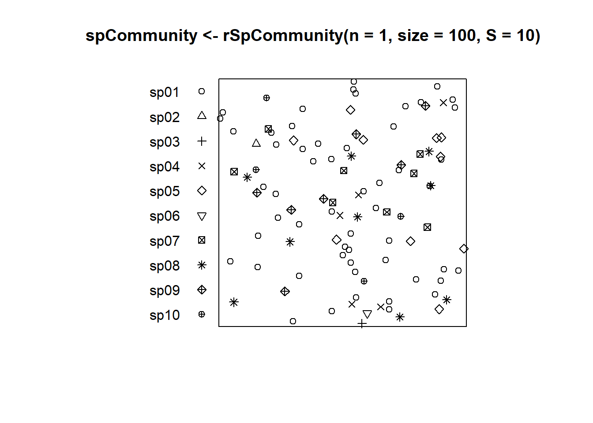
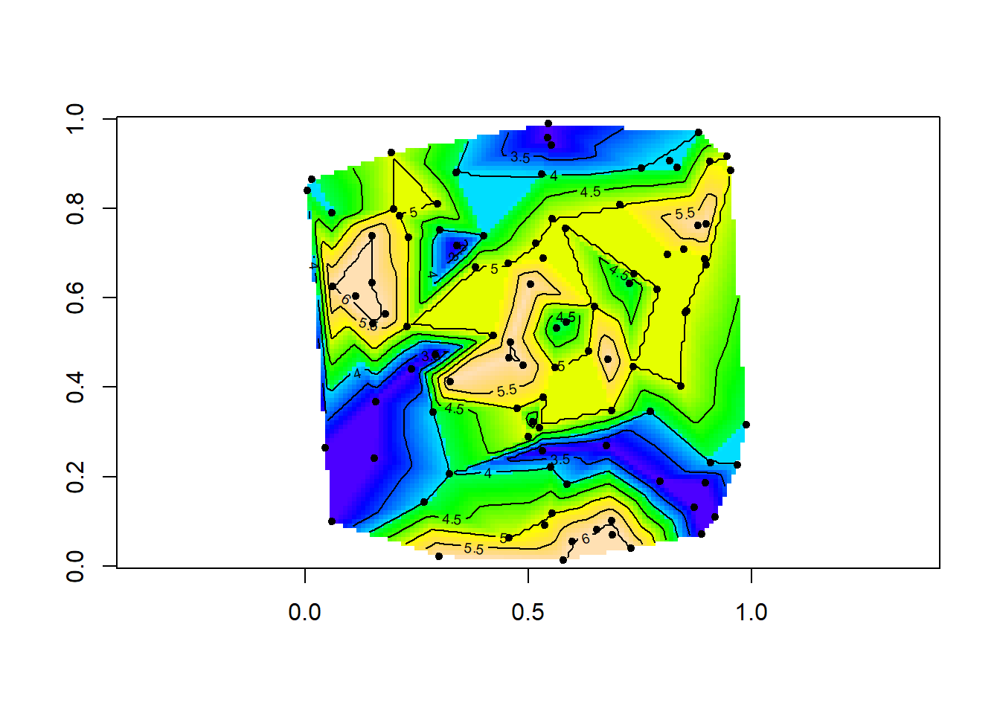
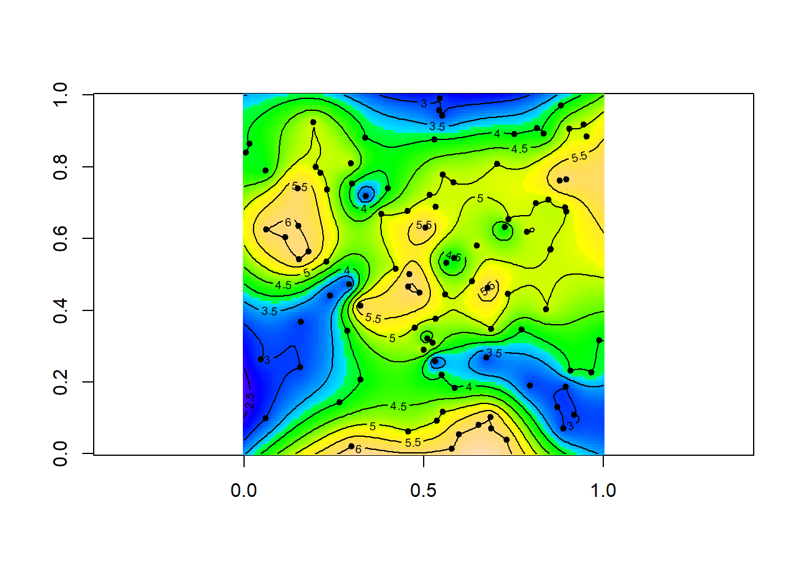
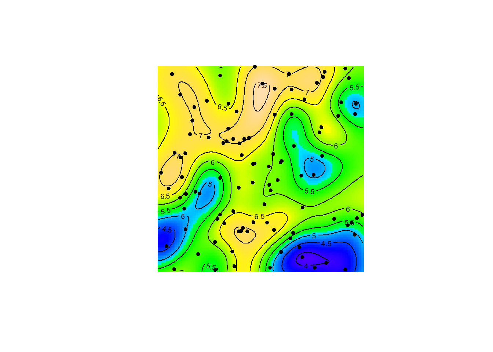
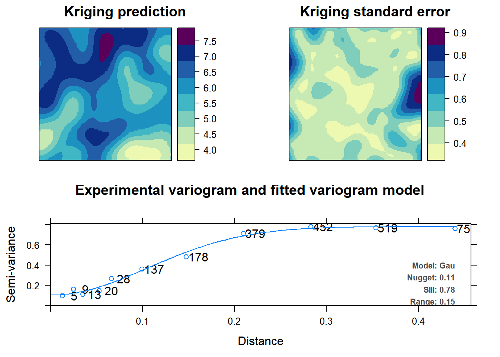
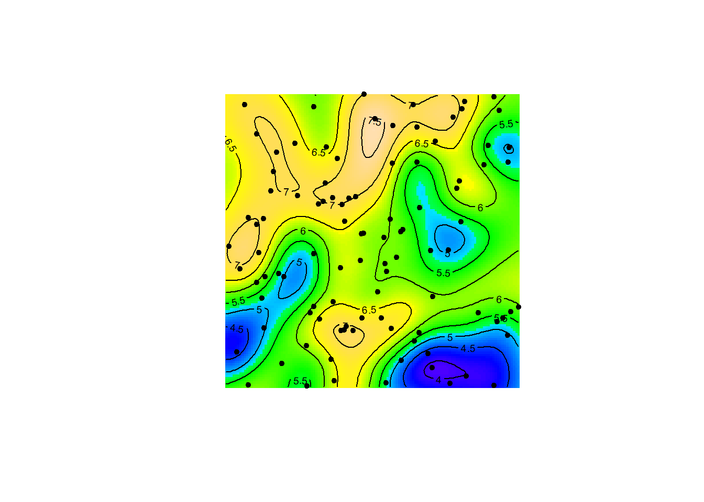

Krigeage avec R
Eric Marcon
28 octobre 2018
Abstract
Techniques pour interpoler les valeurs d’une variable continue.
1 Interpolation et cartographie locales
1.1 Création des données
Création d’une communauté de 100 individus de 10 espèces dans une placettes carrée de 1x1.
library("SpatDiv")
plot(spCommunity <- rSpCommunity(n = 1, size = 100,
S = 10), which.marks = "PointType")
Calcul de la SAC en fonction du nombre de voisins.
divAccum <- DivAccum(spCommunity, n.seq = 1:10, q.seq = 0,
Individual = TRUE)## ==================================================1.2 Cartographie
1.2.1 akima
La méthode d’Akima est une interpolation entre les valeurs des points, faite dans chaque triangle constitué par les triplets de points les plus proches. La valeur des points est conservée. L’interpolation se limite au polygone convexe contenant les points.
library("akima")
Interpole <- with(divAccum, interp(x = SpCommunity$x,
y = SpCommunity$y, z = Neighborhoods["0", "10",
], xo = seq(from = 0, to = 1, by = 0.01), yo = seq(from = 0,
to = 1, by = 0.01)))
image(Interpole, col = topo.colors(128, alpha = 1),
asp = 1)
contour(Interpole, add = TRUE)
with(divAccum, points(x = SpCommunity$x, y = SpCommunity$y,
pch = 20))
1.2.2 spatial
La librairie spatial permet krieger, mais renvoie des erreurs si la méthode de calcul de la covariance n’est pas exponentielle. L’ordre du polynome du modèle et la distance de dépendance doivent être choisis explicitement.
library("spatial")
Carte <- with(divAccum, surf.gls(np = 3, covmod = expcov,
x = SpCommunity$x, y = SpCommunity$y, z = Neighborhoods["0",
"10", ], d = 0.5))
Krieg <- prmat(Carte, xl = 0, xu = 1, yl = 0, yu = 1,
n = 128)
image(Krieg, col = topo.colors(128, alpha = 1), asp = 1)
contour(Krieg, add = TRUE)
with(divAccum, points(x = SpCommunity$x, y = SpCommunity$y,
pch = 20))
1.2.3 gstat
La librairie gstat étend les possibilités de kriegeage en permettant de spécifier un modèle de tendance pour la variable cartographiée (inutile ici, on utilise formula=Richness~1). Le variogramme doit être calculé et un modèle ajusté (dans l’exemple, un modèle gaussien et non exponentiel).
library("sp")
# Création d'un SpatialPointsDataFrame avec les
# données
sdfCommunity <- with(divAccum, SpatialPointsDataFrame(coords = data.frame(x = SpCommunity$x,
y = SpCommunity$y), data = data.frame(Richness = Neighborhoods["0",
"10", ])))
library("gstat")
# Variogramme empirique
vgmEmpirique <- gstat::variogram(Richness ~ 1, data = sdfCommunity)
# Ajustement d'un modèle gaussien
vgmX <- fit.variogram(vgmEmpirique, vgm("Gau"))
# Objet geostat qui décrit toutes les
# caractéristiques de la modélisation. La formule
# donne le modèle de tendance
geoX <- gstat(formula = Richness ~ 1, locations = sdfCommunity,
model = vgmX)
# Préparation d'une grille de 128 points de côté
xy <- expand.grid((0:128)/128, (0:128)/128)
names(xy) <- c("x", "y")
gridded(xy) <- ~x + y
# Calcul de la valeur de Richness sur les points de
# la grille (kriegeage)
geoXprd <- predict(geoX, newdata = xy)## [using ordinary kriging]# Carte
image(geoXprd, col = topo.colors(128, alpha = 1), asp = 1)
contour(geoXprd, add = TRUE)
with(divAccum, points(x = SpCommunity$x, y = SpCommunity$y,
pch = 20))
1.2.4 automap
La librairie automap s’appuie sur gstat mais automatise toutes les étapes de sélection du modèle de covariance (celui qui s’ajuste le mieux aux données est choisi). Le modèle sélectionné est affiché dans le variogramme. La grille précédente peut être utilisée, mais une grille calculée à partir de la fenêtre de l’objet ppp (librairie spatstat) est plutôt utilisée ici.
library("spatstat")
# Préparation d'une grille de 128 points de côté
xy <- gridcentres(spCommunity, 128, 128)
# Filtrage des noeuds de la grille à l'intérieur de
# la fenêtre (inutile ici)
ok <- inside.owin(xy$x, xy$y, spCommunity)
# Formatage de la grille
Grille <- SpatialPoints(cbind(xy$x[ok], xy$y[ok]))
gridded(Grille) <- TRUE
# Krigeage du SpatialPointsDataFrame créé à partir
# des données précédemment
library("automap")
AutoKrige <- autoKrige(formula = Richness ~ 1, input_data = sdfCommunity,
new_data = Grille)## [using ordinary kriging]# Résultat du krigeage
plot(AutoKrige)
# Carte similaire aux précédentes
image(AutoKrige$krige_output, col = topo.colors(128,
alpha = 1), asp = 1)
contour(AutoKrige$krige_output, add = TRUE)
with(divAccum, points(x = SpCommunity$x, y = SpCommunity$y,
pch = 20))